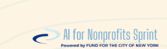
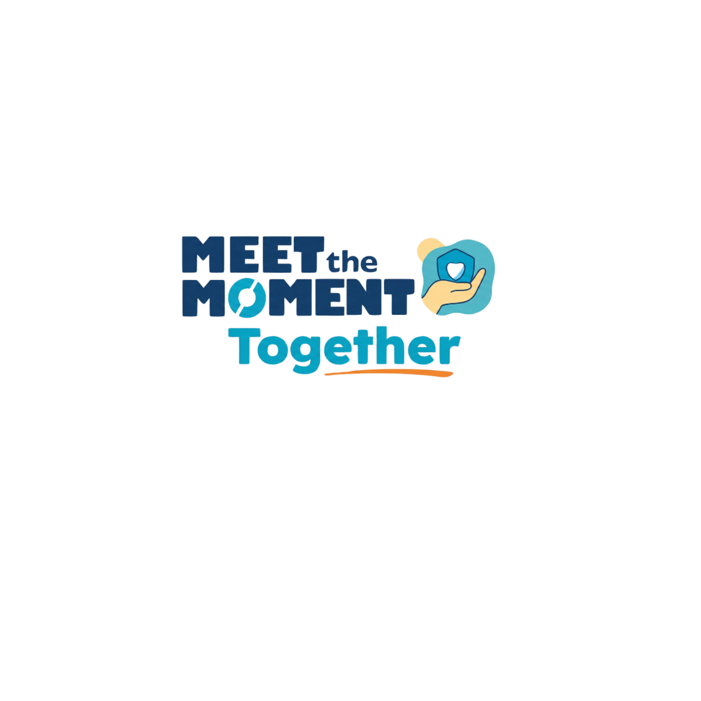

Full Recording
Watch the full session
The complete webinar — all five days of the Kitty Crochet Collective walk-through, plus Q&A. 59 minutes.


A live walk-through of the powerful AI already inside Google Workspace for Nonprofits — Gemini, NotebookLM, Gems, Apps Script, and Vids — demonstrated end to end using the Kitty Crochet Collective.
Full Recording
The complete webinar — all five days of the Kitty Crochet Collective walk-through, plus Q&A. 59 minutes.
Key Themes & Takeaways
Six through-lines that ran across the demos, Q&A, and the extended conversation at the end.
The fictional nonprofit used across MTM's sessions now has a real website, Google Workspace, sign-up form with email automation, AI chatbot, grant application, board slides, and a promotional video — all built in 4–5 hours total using free tools already inside any Google Workspace for Nonprofits license.
The clearest mental model from the session: Gems are standard operating procedures — a specific task, specific instructions, a specific role. NotebookLM is your knowledge base — a grounded RAG engine that draws only from your own documents. The two are designed to work together: your Notebook can be a knowledge source inside a Gem.
Apps Script connects the website form to a spreadsheet and triggers a welcome email. The Notebook stores org knowledge. The Gem draws from the Notebook to write grant applications in 15 seconds. Google Vids stitches AI-generated scenes into a promotional video. This is one connected flow — not six tools you adopt and abandon separately.
A recurring Q&A question: Is our data safe? On a Google Workspace account (not personal), your inputs to Gemini and NotebookLM are not used to train Google's AI models — that's contractual, not just a setting. The same enterprise protections that cover your Drive and Gmail apply. Workspace privacy documentation shared in the session.
A critical nuance Joshua flagged live: sharing a NotebookLM notebook may give recipients access to documents they couldn't access directly in Drive. If the notebook sources HR files and you share it with someone outside HR, they can query those files through it. Test this before sharing notebooks organization-wide.
The full Kitty Crochet stack — website, chatbot, email automation, AI policy, grant application, board slides, podcast, mind map, promotional video — took two people roughly 4–5 hours total. The question isn't whether your org can afford to use these tools. It's whether you can afford not to.
Standout Quotes
NotebookLM is one of the most criminally underused AI products in the marketplace. There is not another AI tool that does the kinds of things that it does.
This is the Ferrari that's sitting in a lot of our garages that we don't even know is there.
Think of Gems as a standard operating procedure and NotebookLM as a knowledge base — or a knowledge management system.
As long as you are on your work Google Workspace account, it is not using your data for data training. That's part of the deal.
"How do I pick my jaw up off the ground?" — "Do you have one of those grabbers they use to get stuff off high shelves at the grocery store?"
Remember when you couldn't even get AI to spell anything correctly? I mean, it has come a long way.
Q&A Pulse
This session ran Q&A only — no group chat. Twenty-four questions, 59 minutes. Here's what dominated: the questions that kept coming, the moments that got the most reaction, and the answers worth keeping.
Open Questions
Questions raised in the session that are worth sitting with — some answered, some still evolving as the tools change.
Resources & Demo Materials
Everything shown in the webinar is accessible. The Kitty Crochet Collective is fictional — but the website, Google Drive folder, and all the assets are real and open to explore.
Sign up as a volunteer (the Apps Script automation is live), chat with the AI assistant, and watch the Google Vids promotional video — all built with free tools from the Google Workspace for Nonprofits stack. The full fictional nonprofit, fully functional.
Visit kittycrochet.orgThe full walk-through guide for this session — the five-tool stack explained, the week-in-the-life story, what's free vs. paid in Google Workspace for Nonprofits, and a complete demo index with links to every asset shown.
Open the mini-siteThe complete Google Drive folder with every asset created for the demo: org profile, AI use policy, grant application, GrantWriter Gem instructions, board meeting materials, video scripts, and more. Click to open directly in Google Drive.
Open in Google Drive